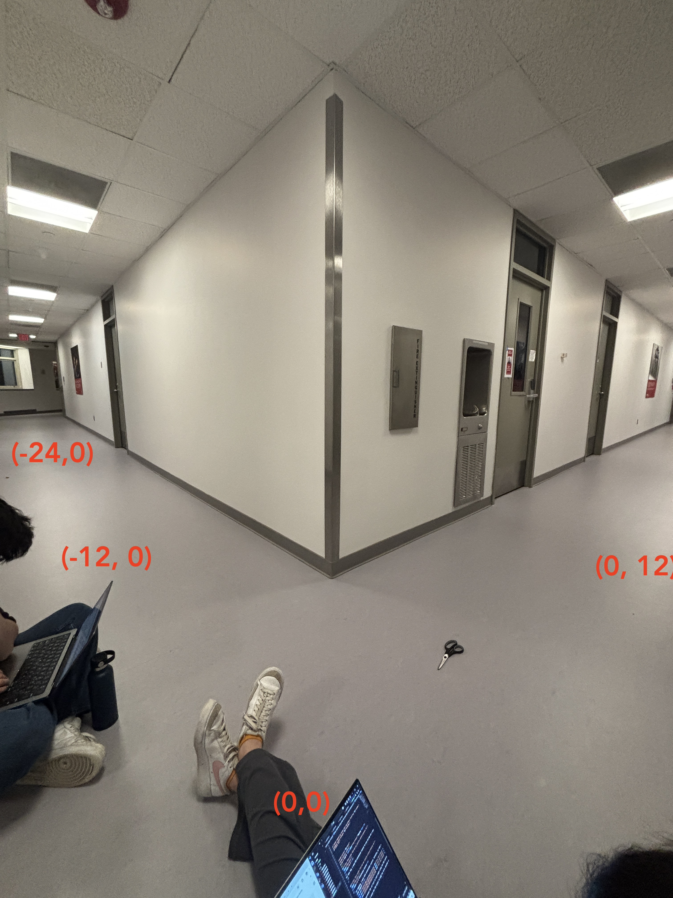
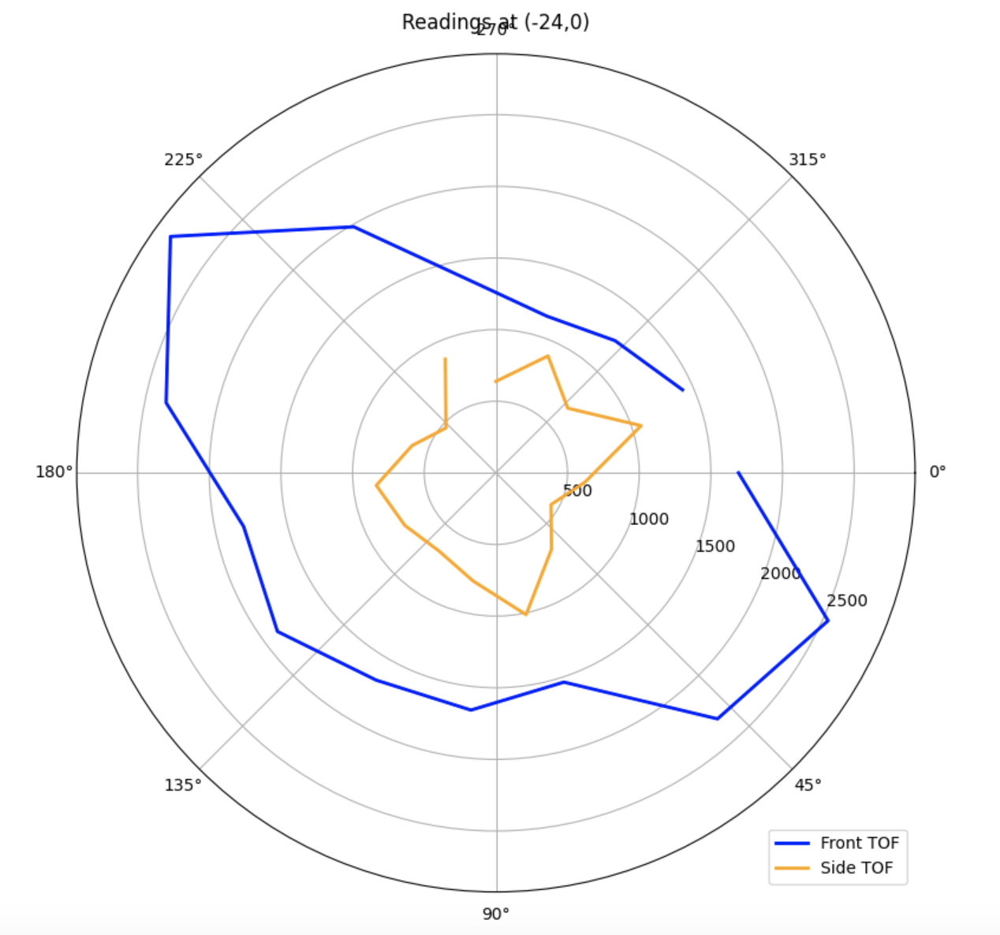
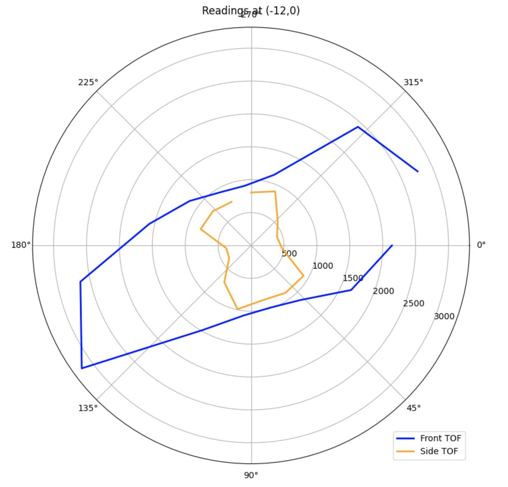
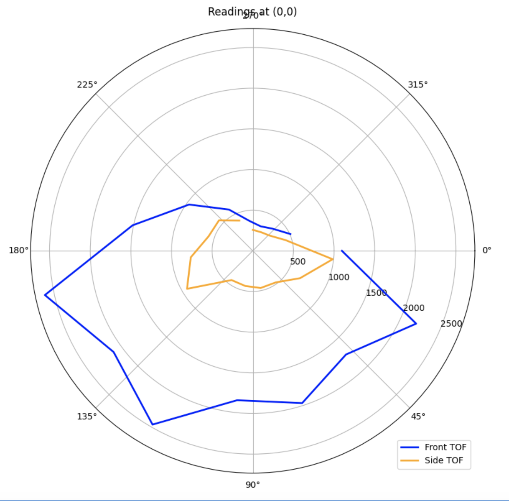
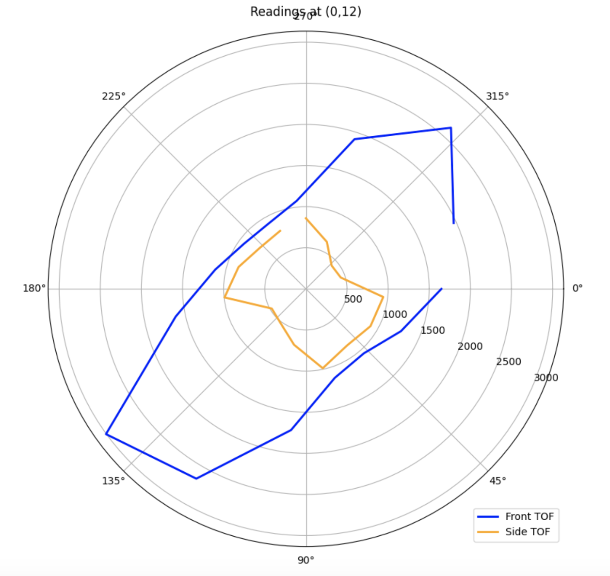
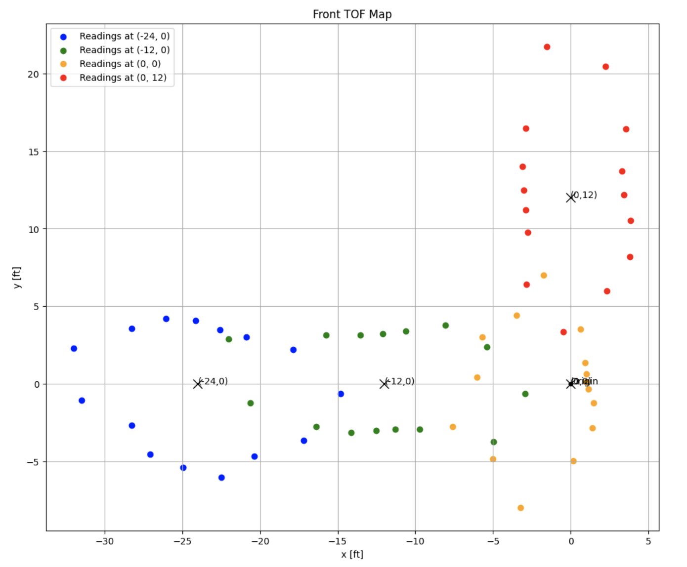
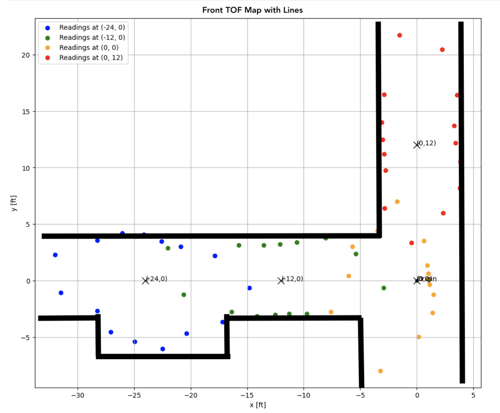

Lab 9: Stunts!
04.08.2025 - 04.15.2025
In this lab, we started building a static map of the lab environment using distance data from the robot’s ToF sensors. I used PID control on orientation to make the robot perform on-axis rotations at multiple marked positions, collecting evenly spaced distance readings as it turned. After gathering all the data, I transformed the measurements into the room’s reference frame and plotted them to create a map. This map will be used in future labs for localization and navigation.
Orientation Control
For the mapping routine, I decided to use orientation control since my Lab 6 PID had already shown solid and consistent performance. I chose to rotate the robot in 24-degree increments, capturing 15 distinct orientations at each scanning location, and took 5 distance and IMU measurements at each angle to improve reliability. To support this process, I added a START_MAPPING BLE command to the Artemis to initiate the orientation-based scanning routine.
case START_MAP:
{
// setup
set_up_tof();
pid_ori_i = 0;
increment = 24;
num_readings = 5;
start_time = (float)millis();
// initialize control variables
pid_ori_error_threshold = 5;
error_ori = 0;
prev_error_ori = 0;
error_sum_ori = 0;
current_angle = 0;
distanceSensor1.startRanging();
distanceSensor2.startRanging();
for (int i = -180; i < 180; i += increment)
{
target_angle = i;
do
{
pid_ori(target_angle);
delay(10);
} while (!(abs(error_ori) < pid_ori_error_threshold));
drive(0, 0);
delay(10);
int j = 0;
while (j < num_readings)
{
if (distanceSensor1.checkForDataReady() && distanceSensor2.checkForDataReady() && myICM.dataReady() && pid_ori_i < num_data_msgs)
{
float yaw_g = 0, roll_g = 0, pitch_g = 0, dt = 0;
unsigned long last_time = millis();
if (j != 0)
{
last_time = times[pid_ori_i - 1];
}
const float alpha = 0.0735;
times[pid_ori_i] = millis();
distanceSensor1.startRanging();
distance1_data[pid_ori_i] = distanceSensor1.getDistance();
distanceSensor1.clearInterrupt();
distanceSensor1.stopRanging();
distanceSensor2.startRanging();
distance2_data[pid_ori_i] = distanceSensor2.getDistance();
distanceSensor2.clearInterrupt();
distanceSensor2.stopRanging();
// yaw
myICM.getAGMT();
unsigned long current_tm = millis();
dt = (current_tm - last_time) / 1000.;
last_time = current_tm;
yaw_g = yaw_g + myICM.gyrZ() * dt;
gyro_yaw_raw[pid_ori_i] = yaw_g;
pid_ori_i++;
j++;
}
delay(100);
}
}
for (int i = 0; i < pid_ori_i; i++)
{
tx_estring_value.clear();
tx_estring_value.append(times[i]);
tx_estring_value.append(",");
tx_estring_value.append(distance1_data[i]);
tx_estring_value.append(",");
tx_estring_value.append(distance2_data[i]);
tx_estring_value.append(",");
tx_estring_value.append(gyro_yaw_raw[i]);
tx_characteristic_string.writeValue(tx_estring_value.c_str());
}
break;
}
I had to tweak my PID code and parameters from Lab 6 to be able to handle smaller changes in angle. I iterated through 360 degrees by using a for loop. At each angle, the robot pauses to take 5 distance readings using the ToF sensors. These readings are stored and averaged to improve accuracy. The current orientation angle is recorded using IMU data for precise angular tracking. Once the scan at a position is complete, the robot continues on to the next angle. The mapping data is formatted into a structured message, including distance and orientation, to simplify post-processing.
One issue I had was not having enough power to my wheels for small angle changes. Tweaking my parameters helped, but ultimately I had to clip any values smaller than 75 to 75. This ensured that even with small errors, the car would still be able to overcome the ground's friction and rotate.
Readings
After implementing the mapping command, I had to take data at four different points in order to map the robots surroundings. I wasn't able to finish in time to do the mapping in lab, so I took measurements in a hallway.
The videos below show mapping in action at (0, 12), (-12,0), and (-24,0), respectively.
After collecting data for each angle, I sent over the distance and yaw values via BLE. I plotted the average distances for each location on polar axes to ensure that the data I was collecting was valid.
   From these graphs, I could tell that the second sensor was shifted by 90 degrees, as the sensors are placed in the front and on the side of the car.
While testing, I noticed that the robot was pretty inconsistent with what it considered to be 0 degrees. Therefore, I concluded that I was better off trusting the orientation from the gyroscope. Furthermore, the error threshold I had was 5 degrees, so there will always be some kind of error that makes readings not equally spaced.
Transformation
Next, I converted the distance measurements taken relative to the robot at each scan location into the arena's global reference coordinates (x and y). I did this by defining a three-dimensional transformation matrix T, such that:
T = [ R d ] = [ cos(θ) -sin(θ) x ]
[ 0 1 ] [ sin(θ) cos(θ) y ]
[ 0 0 1 ]
I also defined two position vectors P₁ and P₂ for the two ToF sensors relative to the center of the robot:
P₁ = [ TOF₁ ]
[ 0 ]
[ 1 ]
P₂ = [ -TOF₂ ]
[ 0 ]
[ 1 ]
In my case, the front sensor (TOF₁) is mounted about 2.5 inches in front of the center of the robot, while the side sensor (TOF₂) is located about 1 inches to the left of center. I applied these offsets to the distances measured by each sensor during mapping and transformed the resulting points into the environment's global reference frame.
When all the data is plotted together, the result is a spatial map of the environment from four distinct scanning locations. Because the second sensor was giving me smaller values that seemed off, I decided to just use my ToF 1 data.
When I first generated the map, I noticed that a lot of the points weren't quite aligned in a hallway-looking shape. I realized that because my robot didn't start at the same orientation, I would have to rotate some of the points to make it the correct orientation.
Edges
Finally, using the map from prior, I drew lines according to the trend of distance points.
Comparing it to the hallway, I would say that it matched up pretty well. One slight mistake was that my distance measurements at (0,0) were actually closer to the right wall than intended. Thus, the orange points show that there is a wall directly to its right, when it reality that wall was more likely to be where the red points' right wall are.
From the lines that I drew, I made rough estimates for the starting and ending coordinates for each of these lines
| Line Number | Starting Coordinates (x, y) | Ending Coordinates (x, y) |
|---|---|---|
| 1 | (-33, -3) | (-28, -3) |
| 2 | (-28, -3) | (-28, -7) |
| 3 | (-28, -7) | (-17, -7) |
| 4 | (-17, -7) | (-17, -3) |
| 5 | (-17, -3) | (-5, -3) |
| 6 | (-5, -3) | (-5, -9) |
| 7 | (4, -9) | (4, 23) |
| 8 | (-4, 23) | (-4, 4) |
| 9 | (-4, 4) | (-33, 4) |
Notes and Conclusion
I worked with Jennie Redrovan, Sana Chawla, Daniela Tran, and Henry Calderon on this lab. I also referenced Stephen Wagner's Lab 7 Report from last year.